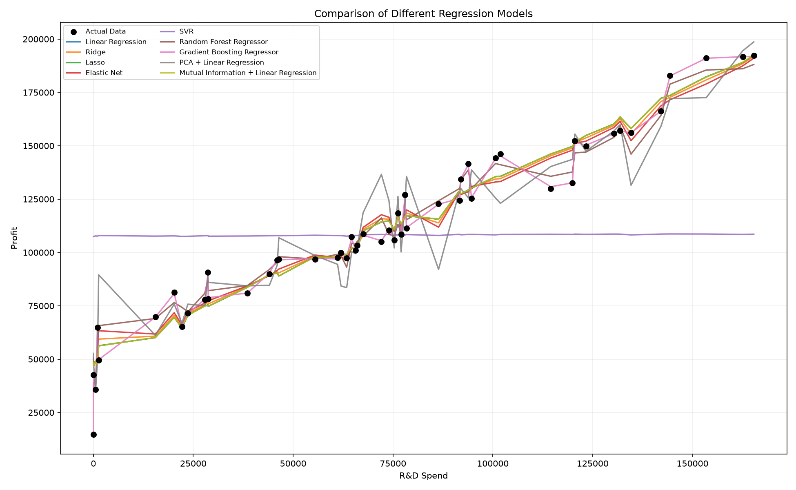
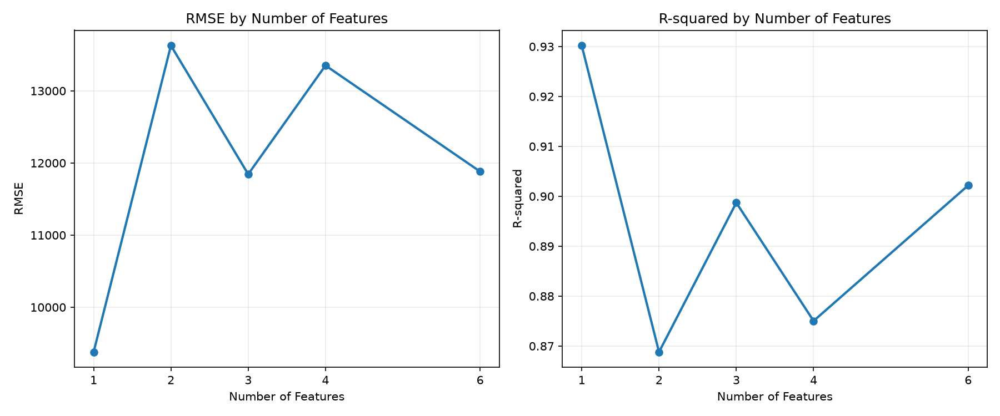

50 Startups Regression Analysis
This project follows the CRISP-DM workflow to prepare, model, and evaluate the 50 Startups dataset, with the goal of predicting company profit.
Results summary


This project follows the CRISP-DM workflow to prepare, model, and evaluate the 50 Startups dataset, with the goal of predicting company profit.

